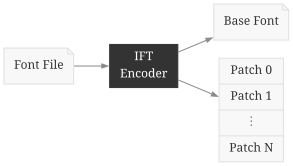
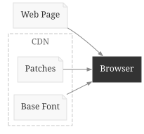
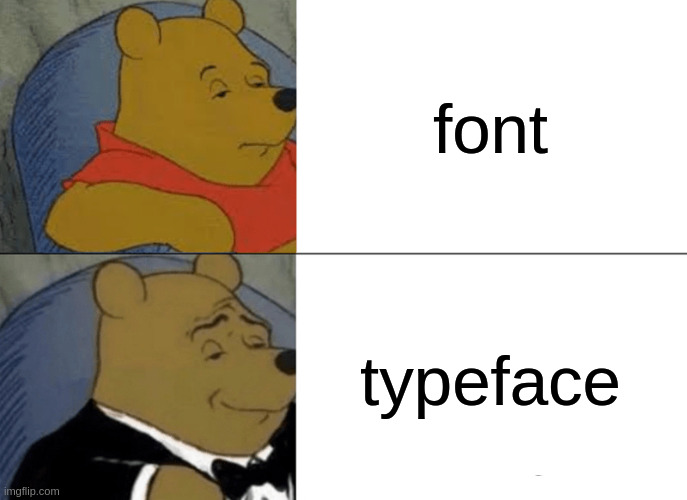

Fonts Q1
Table of Contents
(Reading time: 5-10 minutes)
1. Introduction
I just completed my first full quarter on my new team1, the Google Fonts team. It went about as I expected; I learned a lot of stuff, but wish I had learned it all faster.
So what does the Google Fonts team do? Quite a bit of random stuff here and there, some of it internal to Google, and some of it open source. It's tricky to talk about the internal stuff, but I can comment on the open source efforts.
1.1. Google Fonts
The easiest thing to explain under my team's purview is fonts.google.com. You have probably used this! Many websites use Google Fonts as a CDN and LLMs even seem to default to Google Fonts as the source of fonts.
Google Fonts lets you browse and select from a catalog of fonts. Once selected, you can embed the font files into your website.
<link rel="preconnect" href="https://fonts.googleapis.com">
<link rel="preconnect" href="https://fonts.gstatic.com" crossorigin>
<link href="https://fonts.googleapis.com/css2?family=Baskervville:wght@700&family=Sen:wght@400..800&display=swap" rel="stylesheet">
The neat part about Google Fonts is that the API takes care of the font hosting. No need to download and serve the fonts. If you look at the generated CSS, you can see how the serving is optimized compared to serving simple static files.
/* latin-ext */
@font-face {
font-family: 'Baskervville';
font-style: normal;
font-weight: 700;
src: url(https://fonts.gstatic.com/s/baskervville/v20/YA9Br0yU4l_XOrogbkun3kQ6vLFYXmpq8sRsYgfsigq4dC1F.woff2) format('woff2');
unicode-range: U+0100-02BA, U+02BD-02C5, U+02C7-02CC, U+02CE-02D7, U+02DD-02FF, U+0304, U+0308, U+0329, U+1D00-1DBF, U+1E00-1E9F, U+1EF2-1EFF, U+2020, U+20A0-20AB, U+20AD-20C0, U+2113, U+2C60-2C7F, U+A720-A7FF;
}
/* latin */
@font-face {
font-family: 'Baskervville';
font-style: normal;
font-weight: 700;
src: url(https://fonts.gstatic.com/s/baskervville/v20/YA9Br0yU4l_XOrogbkun3kQ6vLFYXmpq8sRsYgfsigS4dA.woff2) format('woff2');
unicode-range: U+0000-00FF, U+0131, U+0152-0153, U+02BB-02BC, U+02C6, U+02DA, U+02DC, U+0304, U+0308, U+0329, U+2000-206F, U+20AC, U+2122, U+2191, U+2193, U+2212, U+2215, U+FEFF, U+FFFD;
}
/* latin-ext */
@font-face {
font-family: 'Sen';
font-style: normal;
font-weight: 400 800;
src: url(https://fonts.gstatic.com/s/sen/v12/6xKjdSxYI9_3kvWNEmo.woff2) format('woff2');
unicode-range: U+0100-02BA, U+02BD-02C5, U+02C7-02CC, U+02CE-02D7, U+02DD-02FF, U+0304, U+0308, U+0329, U+1D00-1DBF, U+1E00-1E9F, U+1EF2-1EFF, U+2020, U+20A0-20AB, U+20AD-20C0, U+2113, U+2C60-2C7F, U+A720-A7FF;
}
/* latin */
@font-face {
font-family: 'Sen';
font-style: normal;
font-weight: 400 800;
src: url(https://fonts.gstatic.com/s/sen/v12/6xKjdSxYI9_3nPWN.woff2) format('woff2');
unicode-range: U+0000-00FF, U+0131, U+0152-0153, U+02BB-02BC, U+02C6, U+02DA, U+02DC, U+0304, U+0308, U+0329, U+2000-206F, U+20AC, U+2122, U+2191, U+2193, U+2212, U+2215, U+FEFF, U+FFFD;
}
1.2. Font Compiler
Google maintains and develops fontc, a Rust-based compiler that takes font sources and converts them into the binary ttf and otf files. Font sources come in various formats, but usually boil down to definitions for outlines, kerning, metadata and more. It's a lot quicker than the previous Python font compiler, fontmake, which was also developed and maintained by Google.
1.3. Fontations
The Rust Fontations libraries provide a foundation to read and write font
data. This library is used in fontc as well as Skia, the 2D graphics engine
used by Chrome, Chromium, Firefox, and Android.
2. Accomplishments
I did a few things that are internal to Google, but most of my work has been open source. Since it's open source, I can actually present some of the stuff I've done.
2.1. Better Gradients for Resvg+TinySkia
2.1.1. Task
My starter project was to fix Sleipnir rendering of color fonts like emojis and Nabla. Sleipnir is a Rust library that can render text and icons into png or svg.
This one was quite a rabbit hole. The most important skill I picked up was understanding the font format. Fonts (binary ttf/otf files) are composed of tables. The tables define things such as outline contours, supported unicodes, ligatures, kerning, and lots of other stuff; it's a fairly extensible format. Font's can make use of any assortment of the spec to accomplish the goal. The spec is fairly complicated due to decades of legacy.
To inspect the contents of a font, you can open it with the ttx command from
fonttools. This produces an xml representation of the tables. To help me out,
I even made an Emacs package that adds the ability to open ttf, otf, and
woff22 font files. Check out ttx-mode if interested.
2.1.2. Detour
It turns out that getting Nabla to work was not too complicated. However,
tiny-skia, the underlying 2D graphics library, did not have fully support
Radial Gradients and was missing Sweep Gradients entirely. I originally was
going to leave it as is, but my manager encouraged me to continue. So I ended up
learning some math and implementing radial gradient and sweep gradients.
What's rewarding about this is that it affects a few other users. Once typst updates their dependencies, they should have better gradients (issues). I also completed resvg integration to better render radial gradients. Both of these are pretty popular open source tools.
2.2. IFT - Incremental Font Transfer
2.2.1. Background
The main project I should be working on at the moment is landing IFT on the client. IFT is a font technology that reduces the size of fonts on the web. I said should since I've spent most of this quarter procrastinating and failing to comprehend specs. At least I've made a bit of progress.
IFT stands for Incremental Font Transfer. It is a font technology that theoretically enables more efficient transfer of fonts. My coworker, Garret, has been working on the spec and prototype for a while. The spec can be seen on W3.org.
IFT requires 2 components:
- An IFT encoded font. This splits the font into a base font and a collection of patches.
- Client support. Clients (web browsers) must be able to request and apply the patches as needed.

Figure 1: The encoder converts a font file into a font and its patches.

Figure 2: The client must download and apply the relevant patches at runtime.
So why is it useful to split up a font? This is all to reduce download sizes and make things load quickly and more consistently. When using a font, a web page may not need all the glyphs (characters) or styles (italic/bold).
2.2.2. Actual Deliverables
Well, I've been really procrastinating on IFT since it's rather intimidating. I've read some spec, encoding code, decoding code, and Chromium code, but that's not really a deliverable3.
However, I kind of lied about not having any deliverables. At the end of the
quarter I managed to squeeze in IFT support (PR) into ttx. This will allow
us to inspect the IFT table as human readable XML. This is useful for
inspecting the patch definitions while we debug quirks of our new IFT
implementation.
2.2.3. Next
My Q2 goal is to have working IFT support in the browser. This means understanding the Chromium code, implementing the feature, and shipping it behind an experimental flag.
2.3. An Appreciation for Typeface

I've also gained an appreciation for typeface4. I've liked tweaking around the monospace font I use after I started programming. Here's where I've landed for now:
| Context | Purpose | Typeface | Designer |
|---|---|---|---|
| OS | Interface | Jost* | indestructible type* (Owen Earl) |
| OS | Body | Inter | rsms (Rasmus) |
| OS | Terminal | Inconsolata | raphlinus (TUG for funding) |
| OS/Blog | Code | Fira Code | Carrois Type Design & tonsky |
| Blog | Header | Baskervville | ANRT (Rosalie Wagner, on ko-fi) |
| Blog | Body | Sen | PHILATYPE (Kosal Sen) |
Footnotes:
I actually started on the team in late November, but it's a short quarter between all the holidays, nobody being present, and some unexpected sick days.
A woff2 font is just a compressed version of a font.
At the time this was written, my grasp is a lot better. That's a relief, but it would be a 2026Q2 update!
Typeface is the design, for example, the Helvetica typeface. The font is the digital representation manifested into bytes.